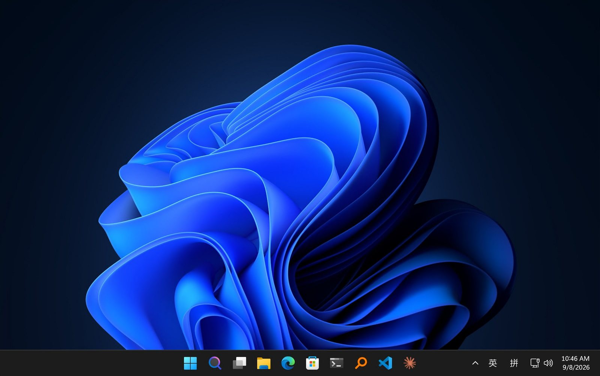
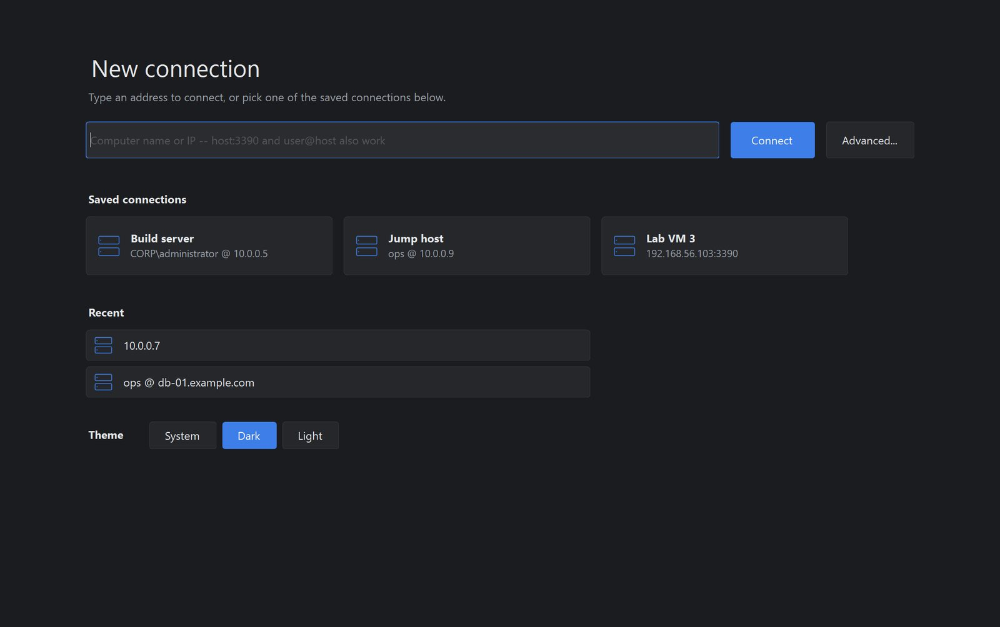
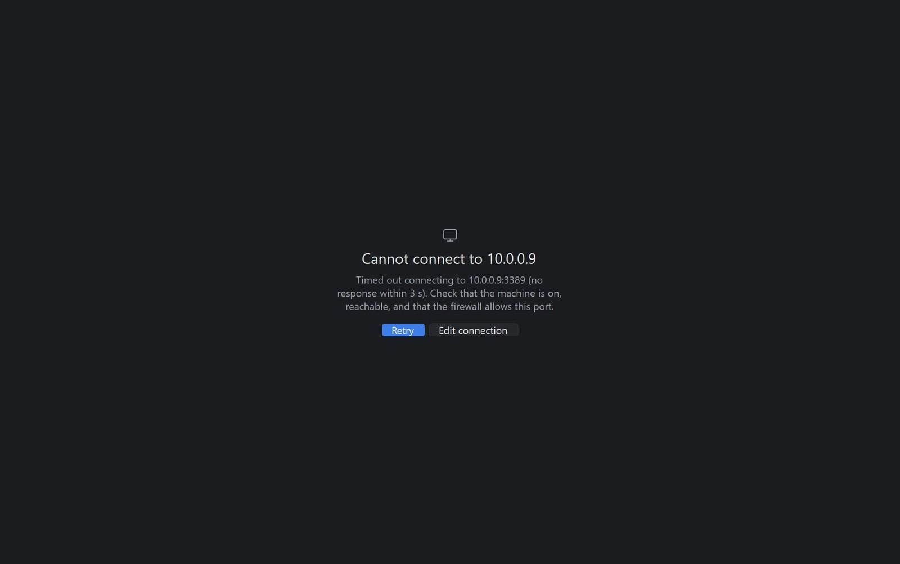

Tabs, not windows
+ opens a connection, middle-click closes one, drag to reorder. Background tabs stay
connected, so switching is instant.
Windows' own Remote Desktop engine behind a Chrome-style tab strip. One window for every session, instead of a pile of them to hunt through on the taskbar.



Click a tab. The strip is drawn by this page; the screens are unretouched screenshots.
+ opens a connection, middle-click closes one, drag to reorder. Background tabs stay
connected, so switching is instant.
Per-connection display, scale, redirection, experience and gateway settings. Passwords are encrypted with Windows DPAPI, never stored in the clear.
No installer, no runtime to download, no telemetry, no background service. It drives the same
mstscax.dll engine mstsc does.